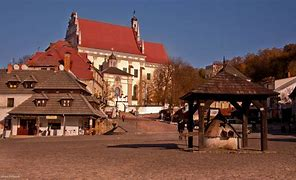
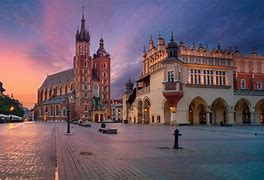
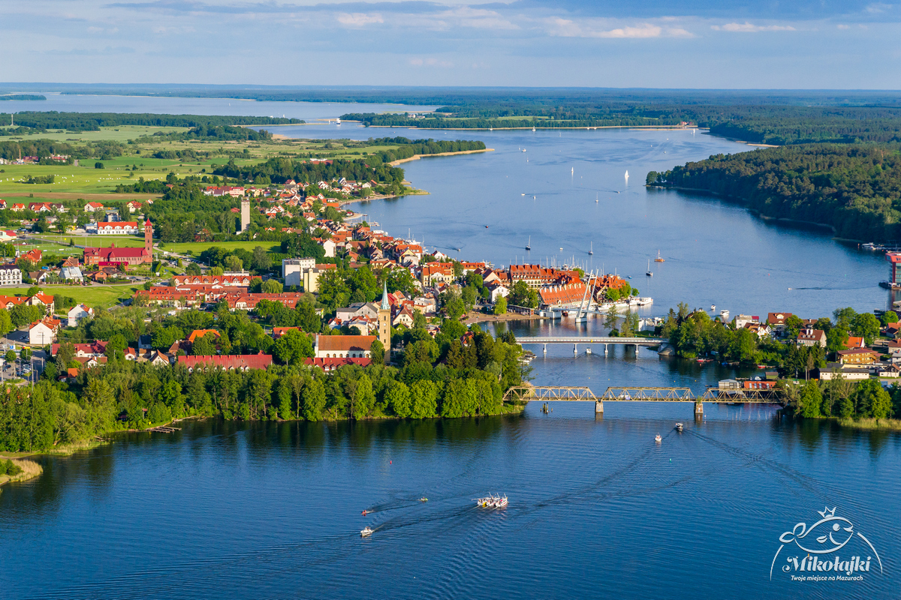
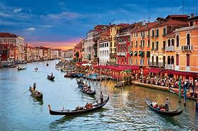
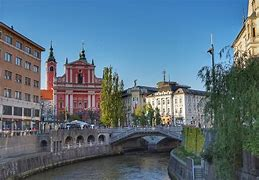
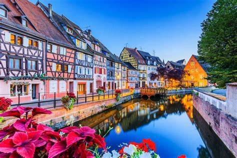

Miasto w Polsce w województwie lubelskim, w powiecie puławskim, nad Wisłą, w Małopolskim Przełomie Wisły, w zachodniej części Płaskowyżu Nałęczowskiego.

Kraków to miasto w południowej Polsce, położone nad Wisłą. Jest drugie pod względem liczby mieszkańców oraz powierzchni i jedno z najstarszych miast Polski o wysokich walorach kulturowych i architektonicznych.

Miasto w województwie warmińsko-mazurskim, w powiecie mrągowskim, siedziba gminy miejsko-wiejskiej Mikołajki. Położone na Mazurach, w Krainie Wielkich Jezior Mazurskich, nad jeziorami: Tałty i Jeziorem Mikołajskim.

Miasto i gmina na północy Włoch nad Morzem Adriatyckim, stolica regionu Wenecja Euganejska.

Stolica i największe miasto Słowenii, położone nad rzeką Ljubljanicą; jugosłowiańskie miasto-bohater.

Miasto w północno-wschodniej Francji, położone przy granicy niemieckiej na Renie. Miasto jest stolicą i głównym ośrodkiem gospodarczym regionu Grand Est i departamentu Dolny Ren. W Strasburgu swoją siedzibę mają m.in. Rada Europy, Europejski Trybunał Praw Człowieka, Parlament Europejski oraz Eurokorpus. Do 31 stycznia 2009 w mieście działał polski konsulat generalny.